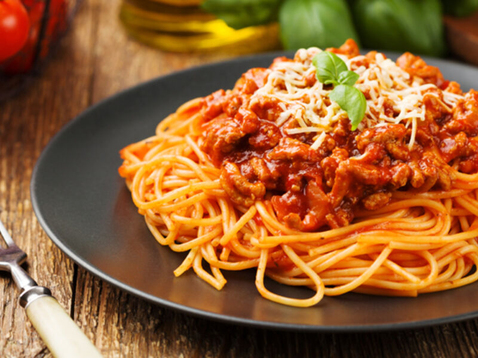

Spaghetti bolognese
Een lekkere en makkelijke klassieker met tomatensaus, gehakt en spaghetti.

Spaghetti bolognese met tomatensaus.
Ingrediënten
- 300 gram spaghetti
- 300 gram rundergehakt
- 1 ui
- 2 tenen knoflook
- 400 gram tomatenblokjes
- 2 eetlepels olijfolie
- 1 theelepel Italiaanse kruiden
- Peper en zout
Bereidingswijze
- Kook de spaghetti volgens de aanwijzingen op de verpakking.
- Snipper de ui en snijd de knoflook fijn.
- Verhit de olijfolie en bak de ui en knoflook zacht.
- Voeg het gehakt toe en bak dit rul en gaar.
- Doe de tomatenblokjes en Italiaanse kruiden erbij. Laat de saus 15 minuten zacht koken.
- Breng de saus op smaak met peper en zout en serveer deze over de spaghetti.